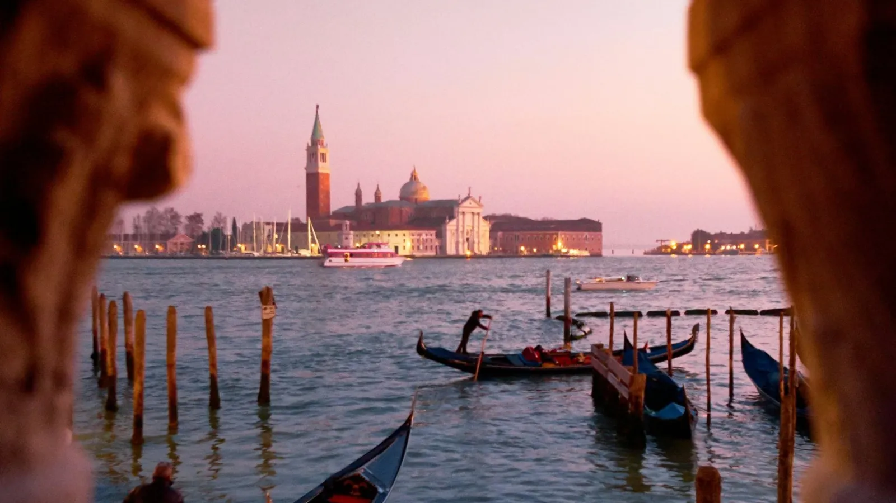

The short answer
Venice charges day-trippers an access fee on selected peak days only. In 2026 it applied on 60 days between 3 April and 26 July, from 8:30 to 16:00: €5 if you book at least 4 days ahead, €10 if you book later. If you sleep in Venice you don't pay it — you only register for a free exemption QR code. Outside those days and hours, entering Venice is free.
Who pays and who doesn't
| You are… | On a fee day |
|---|---|
| A day-tripper (sleeping in Mestre, Padua, Verona, on a cruise…) | Pay €5 or €10 and get a QR code |
| Staying overnight anywhere in the municipality of Venice | Exempt — register for a free QR code (your hotel already pays the tourist tax) |
| Under 14 | Exempt |
| Resident of the Veneto region | Exempt |
| Visiting only Murano, Burano, Lido, Torcello or other lagoon islands | Not charged on the minor islands |
| Arriving after 16:00 or leaving before 8:30 | Not charged |
Exemptions also exist for students, workers, people visiting relatives and a few other cases: check the full list on the official site before you go.
When it applies
The fee is charged only on busy days — mostly weekends, bank holidays and long weekends from spring to mid-summer. In 2026 the calendar ran from 3 April to 26 July (60 days). The city publishes the next year's calendar and prices in advance, and has discussed raising the fee on the most crowded days, so always check the official calendar for your exact date.
How to pay or register
- Go to the official site cda.ve.it (Venice municipality) — avoid look-alike sites that charge extra fees.
- Pick your date, the number of people and your category (paying day-tripper or exempt).
- Pay online if you are a day-tripper: €5 from the 4th day before your visit or earlier, €10 after that.
- Save the QR code on your phone or print it. Checks happen at the main access points (train station, Piazzale Roma, ferry landings).
Forgot to book? You can still register and pay on arrival, but you will pay the higher price — and entering without a QR code on a fee day can mean a fine.
5 legal ways to pay less (or nothing)
- Sleep in Venice one night: no fee, and you see the city before and after the crowds.
- Book early: €5 instead of €10.
- Arrive after 16:00 for a sunset and dinner visit.
- Pick a weekday: most fee days are weekends and holidays.
- Spend the day on Murano and Burano, which are not charged.
Tips
- Coming from Florence or Rome by train? See Trenitalia vs Italo and our Rome, Florence and Venice in 7 days.
- Water buses (vaporetto) are paid separately; a day pass is better value than single tickets if you ride more than twice.
- On high-water days (acqua alta) Piazza San Marco can flood: check the tide forecast in the morning.
Prices and rules are indicative and can change — always check before you travel.
Checked against official sources. Rules and prices change: always confirm on these sites before you travel.
Ready to book?
Affiliate links: if you book, 687 may earn a commission at no extra cost to you.
Venice day, planned around the fee.
In 687 Italy your Venice stage gets the right train, the time you arrive and the sights in walking order. NOW rebuilds the rest of the day if the tide, the weather or the crowds change the plan.